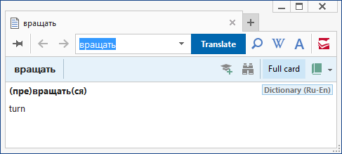

Структура словарной статьи

Словарная статья
Заголовок статьи
Тело статьи
Словарная статья
Словарь на языке DSL представляет собой последовательность словарных статей. Каждая статья состоит из двух частей: заголовка (заглавного слова или словосочетания) и тела. Телом называется переводная или толковательная часть, следующая сразу за заголовком. В DSL тело одной статьи простирается до заголовка следующей статьи или, если эта статья – последняя, до конца файла.
Между телом одной и заголовком следующей статьи для удобства чтения исходного DSL могут быть вставлены одна или несколько пустых строк (двух или более символов новой строки и/или перевода каретки подряд).
Напротив, между заголовком и телом одной и той же статьи не допускается наличие пустых строк. Пустая строка в таком случае будет истолкована, как начало новой статьи и при компиляции этого места компилятор сообщит об отсутствии заголовка.
У одного тела может быть несколько заголовков. В этом случае между заголовками не допускается наличие пустых строк. Пустая строка между заголовками приведёт к ошибке при компиляции с сообщением об отсутствии тела статьи.
В одном словаре не допускается наличие двух статей с одинаковыми заголовками. При этом учитывается регистр букв, т.е. если заголовки совпадают по буквам, но различаются по регистру букв, то они уже не считаются одинаковыми.
Словарные статьи можно располагать в произвольной последовательности, не соблюдая алфавитного порядка заголовков. При отображении в словарной программе заголовки сортируются и порядок их следования в DSL не учитывается.
В DSL, подобно родственному ему языку HTML, действует правило сокращения пробелов: любое количество пробелов, идущих подряд в заголовке или теле статьи, при компиляции заменяются одним пробелом.
Заголовок статьи
Заголовком в DSL является строка, начинающаяся с любого символа, кроме знаков пробела, табуляции и «решётки» (#).
Заголовком может быть как слово, так и словосочетание.
Максимально допустимая длина заголовка – 246 любых символов (непробельных и пробельных). Если этот порог превысить, компилятор сообщит об ошибке и исключит текущую статью из скомпилированного словаря. При подсчёте учитываются также метасимволы \ (экранирования), {···} и (···) со своим содержимым, но не учитываются пробелы, идущие после 246-го непробельного символа – таковые при компиляции будут проигнорированы. В некоторых (редких) случаях компилятор отказывался обрабатывать заголовки длиной выше 236 символов. Таковые отличались своей «дробностью», т.е. большим количеством пробелов и разделителей.
Некоторые особенности оформления заголовков непосредственно зависят от их последующего отображения в словарной программе. При подключении словаря к ABBYY Lingvo, заголовки отображаются двояко:
1) в главном окне программы в общем списке всех заголовков;
2) в окне словарной карточки вместе с телом статьи.

На снимке выше заметны различия отображения одного и того же заголовка в списке и в карточке. Ниже объясняются причины такой разницы.
Для отображения заголовков в карточках характерны две особенности:
1) выделение полужирным начертанием и шрифтом бо́льшего кегля по умолчанию;
2) возможность применять дополнительное форматирование.
Список заголовков в главном окне Lingvo включает в себя заголовочные слова и словосочетания из всех словарей, подключенных в данный момент к программе. Для отображения элементов в этом списке характерны две особенности:
1) отсутствие форматирования;
2) сортировка.
При сортировке списка заголовков в Lingvo учитываются символы: буквы, числа, пробел, дефис -, точка ., апостроф ', подчеркивание _, запятая ,, слэш / и прочие.
При определении порядка следования заголовков в списке в первую очередь учитываются особенности алфавита, вне зависимости от регистра символов. Вследствие чего слово «аврал» предшествует «Аврора», а «ерунда» предшествует «ёрш». Во вторую очередь учитываются числовые коды символов по таблице Юникод. Вследствие чего: такие символы как «дефис», «подчёркивание» перемещаются в начало списка; числа сортируются «1, 10, 100, 2, 20, 200» вместо «1, 2, 10, 20, 100, 200»; слово «Аврора» предшествует «аврора»; латинские символы предшествуют кириллическим и т.д. В официальном справочном руководстве к Lingvo по отношению к порядку сортировки применён термин «"естественный" лексикографический», что является неточностью.
При оформлении заголовков в DSL, особую функцию несёт употребление одинарных фигурных скобок {···}. Эта конструкция создаёт несортируемую часть заголовка, которая:
1) не отображается в списке заголовков главного окна;
2) игнорируется при сортировке списка заголовков главного окна;
3) не учитывается при поиске перевода слов.
Рассмотрим, как выглядит запись в DSL примера заголовка на снимках выше:
Несортируемая часть заголовка :: Запись в DSL
{[c slategray]}{to }{[/c]}tell {[c slategray]}smb{[/c]} how to do {[c slategray]}smth{[/c]}
[m1][trn]рассказать кому-либо, как что-либо делать[/trn][/m]
Сравнение записи и снимков демонстрирует следующие особенности:
- Любой символ или последовательность символов, заключённых в фигурные скобки, не отображаются в списке заголовков, но отображаются в карточке.
- Тэги DSL, заключённые в фигурные скобки, не отображаются и не влияют на внешний вид заголовков в списке главного окна, но влияют на внешний вид заголовков в словарной карточке.
При помощи круглых скобок (···) в заголовке выделяется альтернативная часть. При обработке подобной записи из одного заголовка создаются несколько вариантов. Так, например, запись (пре)вращать(ся) преобразуется в четыре отдельных заголовка: вращать, вращаться, превращать, превращаться. Все эти варианты будут показаны в списке заголовков главного окна без скобок, а при обращении к одному из них, откроется словарная карточка, в заглавии которой отобразится исходное написание из DSL со скобками.
Круглые скобки в заголовках :: Запись в DSL
(пре)вращать(ся)
[m1]turn[/m]
В списке заголовков этот пример покажет четыре разных заголовка без скобок:

А в карточке будет соответствовать написанию в исходном DSL:

У одной статьи может быть несколько заголовков. При этом один заголовок занимает одну отдельную строку. Все они будут показаны в списке заголовков, но при этом в карточке будет отображаться только один их них – тот, который был выбран при вызове карточки.
Между несколькими заголовками не допускается наличие пустых строк. Пустая строка между заголовками приведёт к ошибке при компиляции с сообщением об отсутствии тела статьи.
Тело статьи
Тело статьи может состоять из одной или нескольких строк, каждая из которых должна начинаться или с пробела (одного или нескольких), или с табуляции. Строки, начинающиеся с любых других символов, понимаются словарной программой как заголовки.
Между заголовком и телом, а также между строк тела одной статьи не должно быть пустых строк (двух или более символов новой строки и/или перевода каретки подряд). В обоих случаях пустые строки приведут к ошибке при компиляции, с сообщением об отсутствии тела или заголовка статьи.
Максимальная длина одного «слова», т.е. непрерывной последовательности непробельных символов в теле статьи составляет 255 символов. Превышение данного порога приведёт к ошибке во время компиляции словаря. При подсчёте не учитываются метасимвол экранирования \ и тэги с их атрибутами и значениями. В программе GoldenDict ограничений на количество символов в «слове» не существует, однако очень длинные «слова» некорректно отображаются.
В связи с действующим правилом сокращения пробелов, возникают недоумения при попытке отобразить в словарной карточке отбивку (т.е. пустую строку между абзацами) и красную строку (т.е. отступ первой строки в абзаце). Это можно осуществить следующими способами.
- Употреблением неразрывных пробелов (non-break space).
Код по таблице Юникода: U+00A0.
Alt-коды: Alt+255 или Alt+0160 (доступно через набор на цифровой клавиатуре с одновременно зажатой клавишей Alt).
- Употреблением N-пробелов (En space). Один N-пробел равен половине кегля шрифта (исторически происходит от ширины заглавной буквы «N»).
Код по таблице Юникода: U+2002.
Alt-код: Alt+8194 (доступно через набор на цифровой клавиатуре с одновременно зажатой клавишей Alt).
- Употреблением M-пробелов (Em space). Один M-пробел равен кеглю шрифта (исторически происходит от ширины заглавной буквы «M»).
Код по таблице Юникода: U+2003.
Alt-код: Alt+8195 (доступно через набор на цифровой клавиатуре с одновременно зажатой клавишей Alt).
- Употреблением экранированных пробелов: \{пробел}.
Отбивка и красная строка :: Запись в DSL
Адонис
[m1] ([p]греч.[/p] Adonis, от [p]финик.[/p] Адон - господин) - [p]греч.[/p] [p]назв.[/p] финикийского божества растительности и плодородия, соответствующего [p]вавилон.[/p] Таммузу. Культ А. известен со 2-го тыс. до н. э., а с нач. 1-го тыс. распространялся по [p]финик.[/p] колониям в Средиземноморье и затем проник в Грецию (в [p]греч.[/p] мифологии А. - возлюбленный Афродиты).[/m]
\
[m1][p]Лит.:[/p] Baudissin W. W., Adonis und Esmun, Lpz., 19U.
Отбивка и красная строка :: Вид в словарной карточке
Энциклопедия (Ru-Ru)
Адонис
(
греч. Adonis, от
финик. Адон - господин) -
греч. назв. финикийского божества растительности и плодородия, соответствующего
вавилон. Таммузу. Культ А. известен со 2-го тыс. до н. э., а с нач. 1-го тыс. распространялся по
финик. колониям в Средиземноморье и затем проник в Грецию (в
греч. мифологии А. - возлюбленный Афродиты).
Лит.: Baudissin W. W., Adonis und Esmun, Lpz., 19U.
О нестандартных пробелах и вариантах их использования в DSL см. в главе «Об использовании нестандартных пробелов».